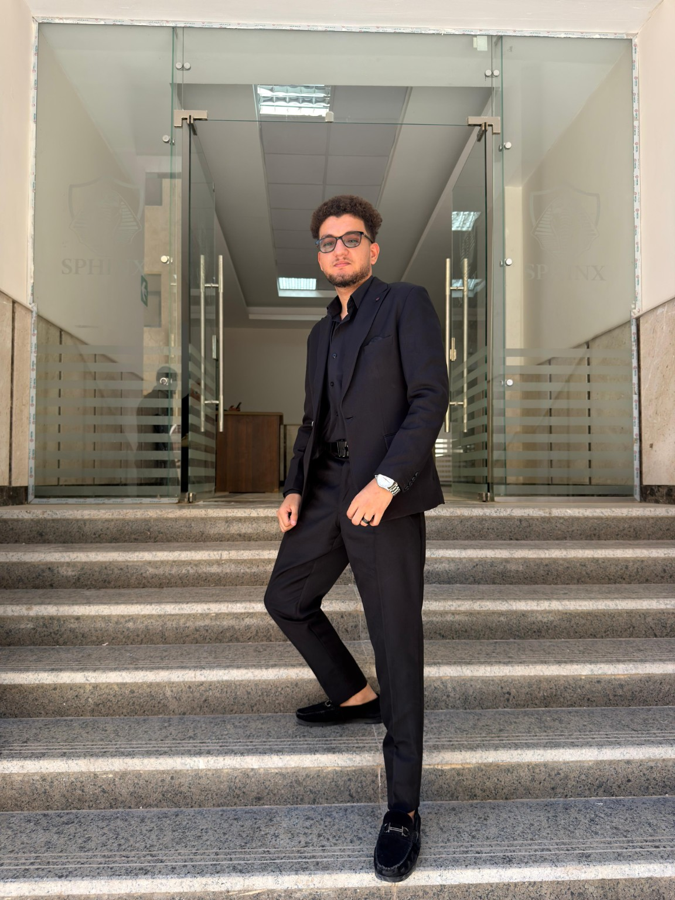

Programming
Python fundamentals, reading and writing programs, scripting and automation.
CYBERSECURITY · NETWORK DEFENSE · THREAT DETECTION
Cybersecurity student building knowledge in network security, ethical penetration-testing fundamentals, vulnerability assessment, threat detection, and incident response.

01 $ whoami
cybersecurity-student
02 $ focus --areas
network-security, threat-detection, defense
03 $ project --status
CyberShield AI [in development]
04 $ mission
learn · build · test · document
$
01 / ABOUT
I am a student at Sphinx University in Egypt, focused on cybersecurity. I am developing my skills in network security, ethical penetration-testing fundamentals, vulnerability assessment, security-log analysis, threat intelligence, and incident response.
I aim to turn what I learn into documented, testable projects. I value clear methodology, reproducible tests, responsible disclosure, and working only in authorized lab environments.
Profile status: Student / early-career candidate. This portfolio does not claim professional employment, certifications, or production-grade results that have not been verified.
02 / TOOLKIT
Current capabilities and areas in development.
Python fundamentals, reading and writing programs, scripting and automation.
Security concepts, reconnaissance learning, network analysis, and authorized lab practice.
Exploring local language models and AI-assisted summaries for security findings.
Project documentation, test cases, result review, and distinguishing alerts from confirmed incidents.
* Confirm hands-on proficiency and tool usage before publishing these tags. Remove any skill you have not used.
03 / SELECTED WORK
Project status is stated transparently; add repositories and measured results as they become available.
AI-assisted security log analysis
A student project exploring a modular workflow for analyzing security logs, identifying suspicious patterns, comparing indicators with local threat-intelligence demo data, and recommending response steps.
Log Analysis · Network Findings · Threat Intel · Incident Response
Connect model + data sources, create repeatable tests, evaluate false positives.
Intelligent Purple Team Platform
A concept for bringing together authorized security testing, defensive monitoring, incident-response guidance, risk analysis, and an AI assistant in one workflow.
Next step: define MVP scope, architecture, data model, and a safe demo lab.
System integration, hardware + software
Team project concept involving Raspberry Pi, Arduino, ultrasonic sensing, camera-based vision, and a Flask REST interface. The role and final tested results should be confirmed before publication.
04 / EDUCATION
Computer & Artificial Intelligence
Egypt · Undergraduate student
Cybersecurity · Networking · AI
Building foundational knowledge through coursework, labs, and independent projects.
Add verified certificates with issuer, completion date, and credential link.
05 / CONTACT
Open to student opportunities, internships, collaborative projects, and feedback on security tools.
Replace the placeholder email and profile links before publishing.